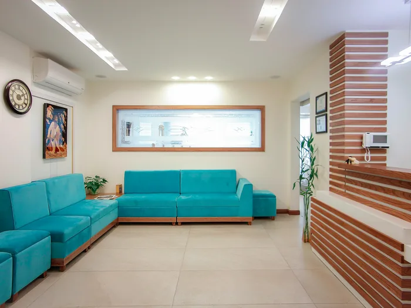
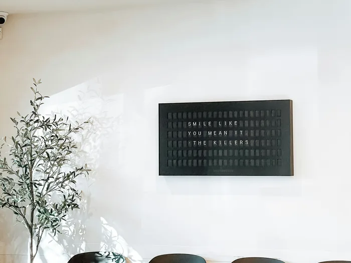

NEWS
お知らせ
“女性のお悩みに、
正面から向き合う”
OUR CONCEPT
あなたの「いつも」に、
安心を。
婦人科を受診することは、まだ多くの方にとってハードルが高いと感じられているかもしれません。でも、月経のこと、妊娠のこと、更年期のこと——女性の体は、生涯を通じてさまざまな変化とともにあります。
ルシア レディースクリニックは、そんな女性のすべてのライフステージに寄り添い、安心して「相談できる場所」でありたいと思っています。女性医師・女性スタッフが丁寧にお話を伺い、あなた自身が納得できる医療を一緒に考えます。
COMMON CONCERNS
こんなお悩みはありませんか？
「こんなことで相談していいのかな」と思うことほど、大切なサインかもしれません。
MEDICAL SERVICES
診療案内
女性のライフサイクル全体を支える幅広い診療を提供しています。
FIRST VISIT
初めての方へ
初めての受診の流れをご案内します。どうぞ安心してお越しください。
受診の際にお持ちいただくもの
- 健康保険証
- 診察券（再診の場合）
- 服用中のお薬・お薬手帳
DOCTOR'S MESSAGE
院長ごあいさつ
女性の体は、思春期から妊娠・出産、そして更年期まで、長い年月をかけてさまざまな変化を経験します。私自身も一人の女性として、その変化の中で感じる不安や戸惑いを大切に受け止めたいと思っています。
婦人科は怖い場所ではありません。「ちょっと気になる」「相談してみたい」と思ったその瞬間が、受診のタイミングです。スタッフ一同、温かくお迎えします。
田中 さくら院長 / 産婦人科専門医
日本産科婦人科学会専門医・指導医
CLINIC FEATURES
クリニックの特徴
安心して通えるクリニックをつくるために、大切にしていることがあります。


ACCESS
アクセス
- ADDRESS
-
〒150-0041
東京都渋谷区神南1-1-1
サンシャインビル 3F - ACCESS
-
JR・東急各線 渋谷駅より徒歩4分
東京メトロ渋谷駅 B1出口より徒歩5分 - HOURS
-
月・火・水・金 9:00 – 18:00 土 9:00 – 13:00 木・日・祝 休診 - TEL
- 03-1234-5678
FAQ
よくあるご質問
RESERVATION
ご予約・お問い合わせ
Web予約は24時間受け付けています。
お電話でのご予約・お問い合わせもお気軽にどうぞ。